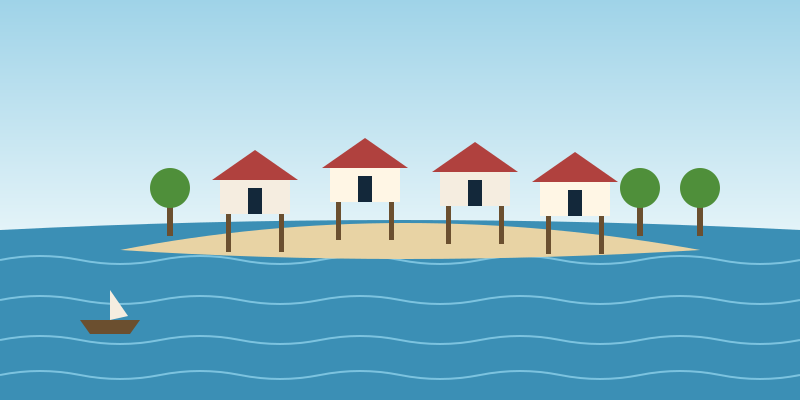

Md. Jehan Rahman
Final-year planning student at RUET, Bangladesh. I combine field research with GIS and remote sensing to study how cities and regions manage risk: groundwater, floods, fire and everyday safety.
24.3700° N · 88.6000° E
WGS 84

Planning with evidence from the field and from the map
I am a final-year undergraduate in Urban & Regional Planning at Rajshahi University of Engineering & Technology (RUET), Bangladesh.
I have worked as an undergraduate research assistant on two groundwater projects, interned on an upazila development plan, and co-authored a peer-reviewed journal article.
Six themes, one question
How do cities and regions manage risk? Each theme below links to the projects and papers behind it.
Water & ecosystems
Valuing what is lost when groundwater falls in the Barind Tract.
- 2 research assistantships
- 1 preprint
Flood-resilient housing
Affordable housing layouts for river island (char) communities.
- 1 site-planning project
- 1 conference paper
Fire & building safety
Fire safety and evacuation in crowded commercial buildings.
- Undergraduate thesis
- 1 conference paper
Mobility & public space
Walking safety, accessibility and community recreation space.
- 2 field and studio projects
- 2 conference papers
Urban growth & regional development
New towns, upazila plans and public investment across districts.
- 1 journal article
- 1 internship
- 1 conference paper
Waste & river environment
How community behaviour shapes solid waste in an urban river.
- 1 conference paper, presented
Field sites across Bangladesh
From the Barind Tract to the Jamuna chars. Select a point on the map to see the work done there.
Rajshahi
City-scale studies of fire safety, walking, public space and river waste.
- Thesis: Fire Evacuation Planning of RDA MarketSupervised by Nazia Hossain
- Fire safety condition of important commercial buildingsICIURP 2027 paper, submitted
- Pedestrian safety surveyBarnali, Laxmipur and Shaheb Bazar
- Recreational space, Divisional Public LibraryStudio project and ICIURP 2027 paper
- Solid waste in the Barnoi RiverPresented at ISEE 2026
- ADP investment and employmentDistricts of Rajshahi Division, ICIURP 2027 paper
Barind Tract
Two research assistantships on groundwater, with field surveys, FGDs, KIIs and land use/land cover mapping.
- Valuing ecosystem services lost due to groundwater depletionResearch assistant · supervised by Sumita Roy
- Valuing economic and environmental externalities of groundwater extractionResearch assistant · supervised by Md. Sakib Zubayer
Kazipur, Sirajganj
Site planning for river island (char) communities exposed to flooding.
- Flood-resilient affordable housing site planICIURP 2027 paper, submitted, first author
Dhaka
Professional practice and a peer-reviewed study of a planned new town.
- Internship at Sheltech Consultants (Pvt.) Ltd.Nawabganj Upazila Development Plan · Feb – Mar 2026
- Purbachal New Town and the decentralization of DhakaCity and Environment Interactions, 2026
Khulna
Secondary and higher secondary education.
- Higher Secondary Certificate, Science (2021)Khulna Public College · GPA 5.00 / 5.00
- Secondary School Certificate, Science (2019)Khulna Public College · GPA 5.00 / 5.00
From the field to the plan
A typical project moves through four stages, each with its own methods and tools.
Field data
I collect primary data on site and from communities.
- Questionnaire surveys
- FGDs
- KIIs
- Site visits
- Drone data
Spatial database
Raw observations become clean, mapped layers.
- Feature digitization
- 2D/3D databases
- Data cleaning
Analysis
Spatial, statistical and qualitative analysis.
- LULC mapping
- GIS & remote sensing
- SPSS
- ATLAS.ti
- PRISMA review
Planning output
Results are turned into plans and papers.
- Site plans
- Evacuation scenarios
- Landscape design
- Research papers
Selected projects
 Thesis
ThesisFire Evacuation Planning of RDA Market
Fire safety assessment and evacuation scenarios for a crowded market in Rajshahi.
Read more → Research assistantship
Research assistantshipGroundwater Depletion, Barind Tract
Valuing lost ecosystem services and the externalities of extraction.
Read more →
Site planningFlood-Resilient Char Housing
An affordable housing site plan for river island communities in Kazipur.
Read more →Milestones, 2019 – 2027
From school in Khulna to research and practice at RUET.
Open to research collaboration and graduate study
Urban planning and geoinformatics: water and climate risk, fire safety and safer public spaces.